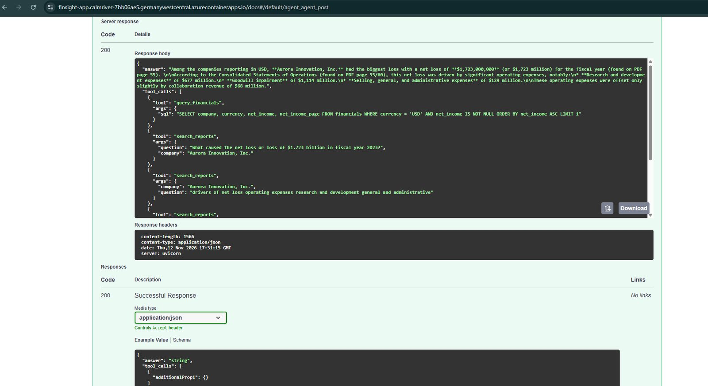
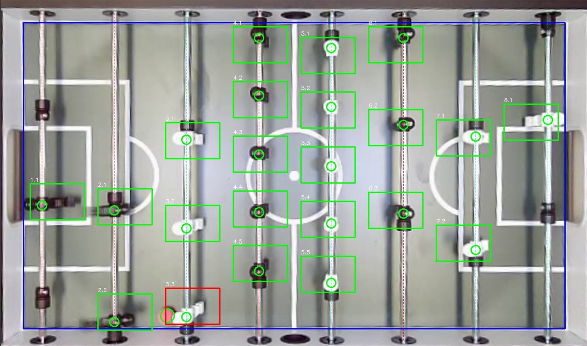
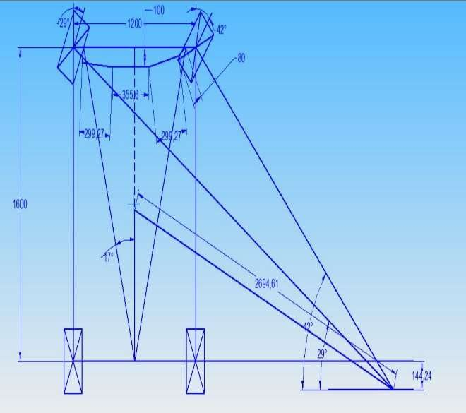

Aakash Deshpande
Aakash DeshpandeHome / Projects
Projects
5 AI and machine learning projects, newest first, followed by 2 from my mechanical engineering years. Pick one to see how it works, with screenshots and results.
-

AI · LLMsFinSight: RAG system and AI agent over 100 annual reports
Ask questions about 100 corporate annual reports and get cited answers, or let an agent query a SQL table of key figures.
Oct – Nov 2026 -

AI · Computer visionComputer vision pipeline for foosball analytics and winner prediction
Master's thesis: one overhead webcam tracks the ball and all 22 players, detects every hit, and predicts the winner with a TCN.
Oct 2025 – Mar 2026 -
 AI · Edge AI
AI · Edge AIReal-time object detection on a Raspberry Pi for an autonomous robot
A fine-tuned YOLOv8n model on a Raspberry Pi 5 finds a cat and drives a robot to follow it, at 8–9 FPS with no GPU.
May – Jul 2025 -
 AI · Computer vision
AI · Computer visionClassical and deep optical flow on Fourier ptychographic microscopy
Comparing Horn–Schunck and TV-L1 against RAFT, PWC-Net and other deep models for aligning microscope images of a leech.
Aug 2024 – Jul 2025 -
 AI · Self-supervised learning
AI · Self-supervised learningSelf-supervised denoising of microscopic images
A tiny network that learns from one noisy image, compared with Median, Wiener and BM3D filters, and deployed on Cloud Run and Kubernetes.
May – Jul 2024 -
 Mechanical engineering
Mechanical engineeringBAJA SAE India: off-road vehicle chassis
Head of the chassis department: designed the frame in SolidWorks and checked it with FEM crash and load simulations in ANSYS.
2017 and 2018 -

Mechanical engineeringSUPRA SAE India: Formula student race car steering
Designed the steering geometry of a Formula-style race car in AutoCAD and CATIA, using the Ackermann principle.
2017 and 2018